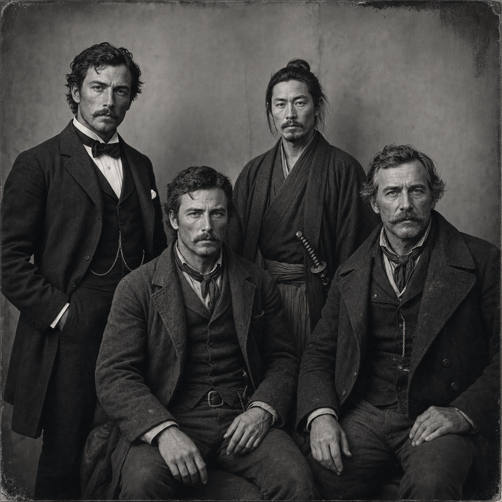

Sample Characters
FRH 1870 Party
The historical FRH cohort gathered under one lane: four linked party members moving through the occult pressures of 1870.

Reader Entry
The 1870 cohort reads best as a party first and four separate sheets second. This group page keeps the historical framing visible, uses the shared party image as the front door, and then lets a reader branch into the individual members without losing the sense that these characters belong to one operating circle.
Etienne Moreau came out of the Gulf world by way of routes honest men usually discuss only after they are old enough not to fear the consequences. He has been sailor, privateer...
Core Profile
Etienne Moreau came out of the Gulf world by way of routes honest men usually discuss only after they are old enough not to fear the consequences. He has been sailor, privateer, smuggler, survivor, and too many other things that look noble or criminal depending on how far away the listener is standing. By 1870 he is no longer young enough to pretend that the sea ennobles men on its own. What it has given him instead is compression: of memory, of weather, of route knowledge, of lies told in six ports under three flags, and of the exact look a cargo manifest gets when it was written to disguise something that should never have crossed a dock in the first place.That makes him invaluable to the historical FRH party. Etienne reads old-water truth, harbor cunning, imperial residue, survivor's exaggeration, and route impossibility better than most men read a ledger. He notices false manifests, obsolete place names, customs lies, smuggling logic, maritime weather truth, and the way empire leaves stains in language long after the official map has changed. He is one of those men whose stories sound embellished until a second witness, a damaged document, or an old port habit proves that he was understating the wrong part. In a group full of unusual minds and stranger burdens, he grounds the archive in movement, trade, and the ways power actually traveled.
He is not a moral innocent, and he should not be cleaned up into one. Greed, concealment, old loyalties, old grudges, and the practiced habit of authority all belong to him. Yet those same flaws give him shape. Etienne is strongest when the case touches cargo, coast, ownership, ports, routes, or imperial interference, because then his whole life becomes evidence instead of ornament. He brings the party a survivor's knowledge that law, weather, commerce, and occult trespass rarely stay in their assigned lanes for long.
To a new companion, Etienne should feel like a weathered Frenchman who has lived too long with water, danger, and compromised trade to confuse respectability with truth. He is the kind of man who can smell fraud in a shipping story, bad luck in a harbor silence, and history in the wrong kind of map, and he carries all three as if they were simply part of becoming old without becoming harmless.
Party Members
.jpg)
Etienne Moreau (1870 FRN)
French 1870 party member shaped by continental pressure, occult duty, and an older Europe.
Etienne Moreau came out of the Gulf world by way of routes honest men usually discuss only after they are old enough not to fear the consequences. He has been sailor, privateer...
.jpg)
Julian Ashcroft (1870 FRH)
Elegant 1870 paper-haunter, provenance thief, and social infiltrator in the historical FRH lane.
Julian Ashcroft became a criminal by studying the respectable version first. He learned early that ownership is often theater, that collections are arguments about power disguised as taste, and that one well-placed...
.jpg)
Sakuma Jiro (1870 FRH)
Disciplined 1870 party member carrying transnational history, restraint, and occult gravity.
Sakuma Jiro comes out of a world that has already ended by the time most new companions meet him. He was formed by service, hierarchy, ritual, and a moral grammar in which...
.jpg)
Silas Brent (1870 FRH)
Hard-edged 1870 party member built for danger, endurance, and historical occult conflict.
Silas Brent is the kind of man frontier country manufactures when it has more danger than explanation and no patience for either complaint or ornament. He learned truth through ground, weather, freight...